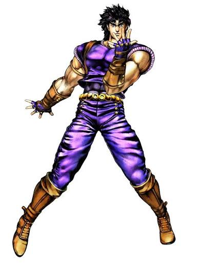
Jonathan Joestar: Un joven noble, amable y valiente que busca proteger a sus seres queridos y defender el bien, incluso frente a enemigos mucho más poderosos.
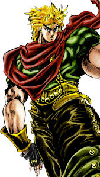
Dio Brando: Un hombre ambicioso, manipulador y despiadado que busca alcanzar el poder absoluto y superar a todos los que considera inferiores.
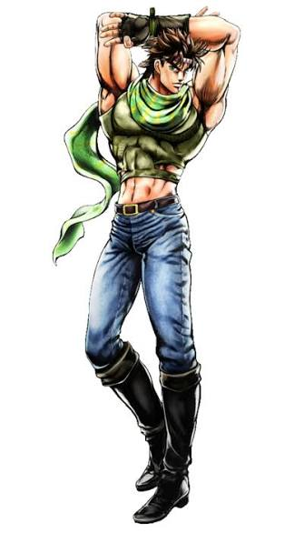
Joseph Joestar: Un joven ingenioso, bromista y astuto que utiliza su inteligencia y creatividad para superar situaciones complicadas.
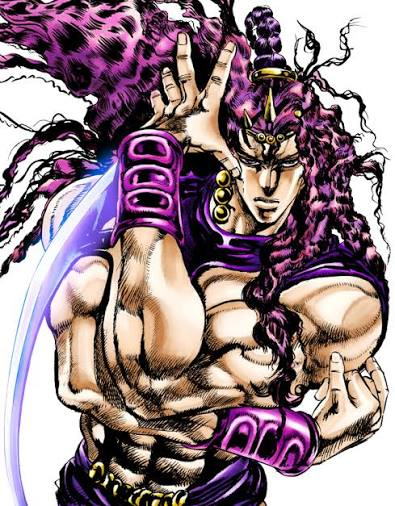
Kars: El líder de los Hombres del Pilar. Es extremadamente inteligente, ambicioso y obsesionado con alcanzar la perfección.
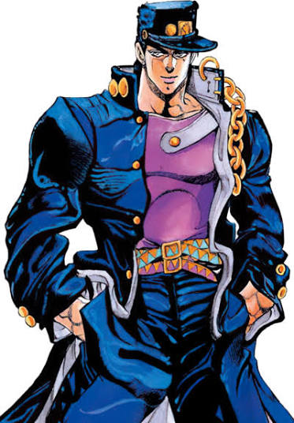
Jotaro Kujo: Un joven serio, reservado y de pocas palabras, que demuestra una enorme valentía y lealtad hacia sus seres queridos.
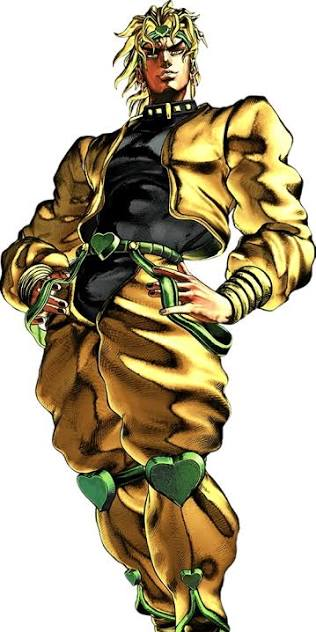
Dio Brando: Tras regresar muchos años después, continúa persiguiendo sus ambiciones de dominación y venganza contra la familia Joestar.
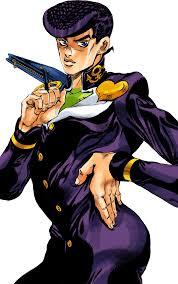
Josuke Higashikata: Un adolescente amable, sociable y de buen corazón, aunque tiene un carácter bastante explosivo cuando insultan su peinado.
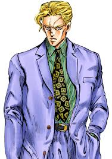
Yoshikage Kira: Un asesino serial que desea llevar una vida tranquila y rutinaria mientras oculta su verdadera naturaleza.
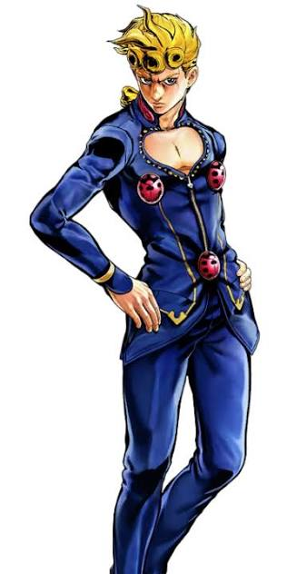
Giorno Giovanna: Un joven decidido, inteligente y ambicioso que sueña con convertirse en una figura importante dentro del mundo criminal para acabar con sus injusticias.
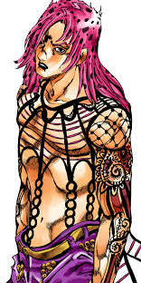
Diavolo: El misterioso y despiadado jefe de Passione, obsesionado con mantener su identidad oculta y conservar su poder.
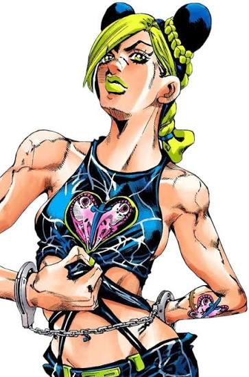
Jolyne Cujoh: Una joven independiente, valiente y decidida que evoluciona enormemente a lo largo de su historia.
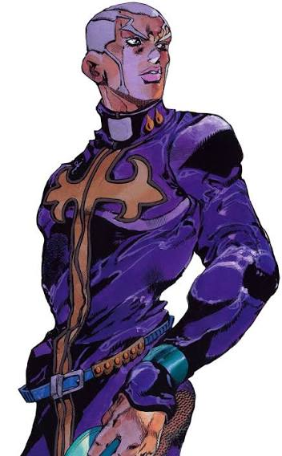
Enrico Pucci: Un sacerdote profundamente religioso que busca cumplir un objetivo que considera necesario para alcanzar la salvación de la humanidad.
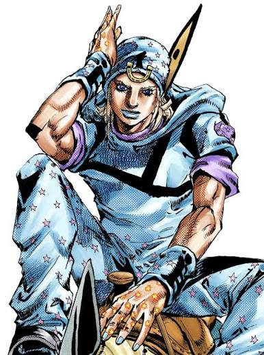
Johnny Joestar: Un antiguo jinete de caballos que, tras atravesar una etapa difícil de su vida, emprende un viaje en busca de recuperar aquello que perdió.
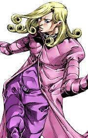
Funny Valentine: El presidente de los Estados Unidos, un hombre patriótico, calculador y dispuesto a hacer grandes sacrificios por los intereses de su país.